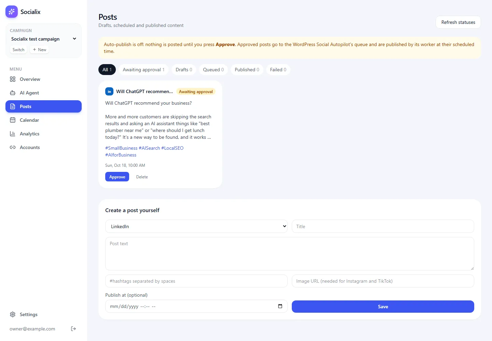
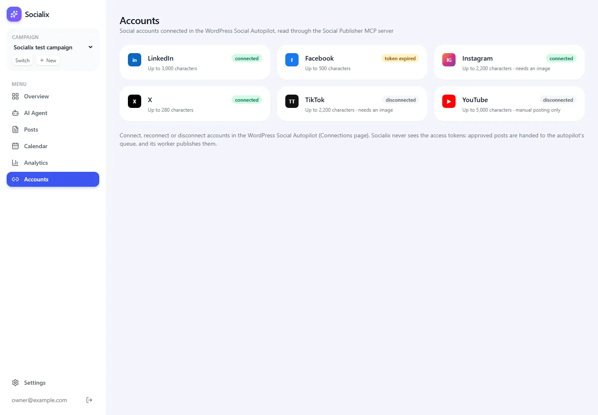

Scheduling Posts (Blotato)
Publishing through the WordPress Social Autopilot via our own MCP server, with owner approval.
▶ Watch this part (02:17:59)Until now our agents could research and write, but nothing left the app. This step connects Socialix to the real social networks. It is the most important step of the guide, because this is where a mistake could put a post in front of real people. So we build it carefully: posts go out only through a tested publisher, only after the owner presses Approve, and the app never touches a social network password or token.
You will learn three things here: what MCP (Model Context Protocol) is and how a program talks to an MCP server over stdio; how our publishing path hands a post to the owner's WordPress Social Autopilot; and how the Posts and Accounts pages let the owner approve, cancel and check posts.
What the video does
The presenter uses Blotato, a paid service that posts to many social networks for you. His plan on the whiteboard (at 02:18:00) has four steps:
- Create a Blotato API key on the Blotato website (Settings, then API). Each user of the app has their own key (02:18:19, 02:21:10).
- Add the key in the app, on a new Settings, Integrations page. The app then fetches the social accounts connected in Blotato (02:18:19).
- Connect social accounts (Instagram, TikTok, YouTube, X, LinkedIn) inside Blotato, not in the app. The app only shows their status (02:18:45, 02:23:49).
- Post and schedule via Blotato: the app calls the Blotato API, and the agents get Blotato's MCP tools (create post, upload media, schedule post, get post status, manage accounts) (02:18:45, 02:21:33).
He pastes one long prompt into a new Claude Code session (Opus 5.5). The part visible on screen asks for a
"Refresh accounts" button, says that scheduled posts publish through the existing Inngest job by calling Blotato's
API, that the chat agent uses Blotato's MCP server with the API key in a header, and that keys are stored encrypted,
server-side. When he pastes his key, the app answers that the server cannot store keys yet: an
INTEGRATIONS_ENCRYPTION_KEY is missing from .env.local (02:22:43). He generates one with
openssl rand -base64 32, adds it, and the integration shows "Connected" (02:23:28).
After connecting Instagram in Blotato, the app's Accounts page shows it (02:24:12). In the agent chat he asks "is youtube connected?" and the agent answers that it does not see a YouTube account, because it checks through Blotato's MCP (02:24:35). Then he notices that a post scheduled in the app never reached Blotato: "we did not have a logic to schedule it" (02:26:07). A second prompt asks Claude Code to "use Blotato MCP tools to schedule the post" whenever the user schedules one (02:26:33). He reschedules a post two minutes ahead, and it appears on his Instagram account (02:27:21–02:28:30). He deletes it, because it was a test.
mcp/social-publisher/server.ts, that puts posts into the autopilot's publishing queue. The autopilot's
worker does the actual posting. Two more differences: in our app every post waits for the owner's
Approve click unless auto-publish is switched on, and our Analytics have no likes or reach numbers
(see step 20).MCP from zero
New to MCP? What it is and why it matters
MCP (Model Context Protocol) is an open standard for giving AI applications access to tools and
data. A program that offers tools is an MCP server. A program that uses them is an MCP
client. The server announces a list of tools, each with a name, a description and a
JSON schema for its input. The client can ask for that list
(listTools) and call any tool by name with arguments (callTool). The answer comes back as
content blocks, usually text, plus an isError flag.
Why bother, when we could just write a function? Because the same server works with any MCP client: our app, Claude Code, Claude Desktop, or a test script. That is exactly why Blotato offers one in the video: any agent can plug into it. We wrote ours so the publishing code lives in one small, separate program with one job.
New to stdio? How two programs talk through standard input and output
Every program gets three text channels from the operating system: standard input (stdin), standard output (stdout) and standard error (stderr). When one program starts another as a child process, it can write into the child's stdin and read the child's stdout. The MCP "stdio transport" uses exactly that: the client writes one JSON message per line into the server's stdin, and the server answers on its stdout.
That has one strict consequence: the server must never print anything else to stdout, or the
client receives garbage instead of a protocol message. Logs go to stderr instead. That is why our server ends with
console.error(...), not console.log(...).
Our MCP server: mcp/social-publisher/server.ts
This file is a complete, separate program. It opens a connection to the autopilot's Postgres database, registers five tools, and waits for requests on stdin. It does not call any social network itself.
// Social Publisher MCP server (stdio). This replaces Blotato from the video.
//
// It does NOT talk to the social networks itself and never reads access tokens. It hands posts to the
// WordPress Social Autopilot: each post becomes a WordPressPost + an APPROVED GeneratedContent + a QUEUED
// PublishJob in the autopilot's database, exactly the rows its own code creates. The autopilot's worker
// (`npm run worker` in that project) then publishes them with its tested publishers: token refresh,
// three retries with backoff, and audit logs included. A future `scheduledAt` becomes the job's nextRunAt.
//
// Tools: list_connections, publish_post, get_post_status, cancel_post, list_recent_posts.
// Never write to stdout from this process except through the MCP transport (stdout carries the protocol).
import crypto from "node:crypto";
import pg from "pg";
import { z } from "zod";
import { McpServer } from "@modelcontextprotocol/sdk/server/mcp.js";
import { StdioServerTransport } from "@modelcontextprotocol/sdk/server/stdio.js";
import { config } from "../../src/lib/env";
const pool = new pg.Pool({ connectionString: config.autopilotDatabaseUrl, max: 3 });
const PLATFORMS = ["LINKEDIN", "FACEBOOK", "INSTAGRAM", "X", "TIKTOK", "YOUTUBE"] as const;
// Mirrors the autopilot's publisher capabilities (src/lib/publishers/*.ts) and character limits (src/lib/limits.ts).
const CAPABILITIES: Record<(typeof PLATFORMS)[number], { canAutoPublish: boolean; requiresMedia: boolean; charLimit: number }> = {
LINKEDIN: { canAutoPublish: true, requiresMedia: false, charLimit: 3000 },
FACEBOOK: { canAutoPublish: true, requiresMedia: false, charLimit: 500 },
INSTAGRAM: { canAutoPublish: true, requiresMedia: true, charLimit: 2200 },
X: { canAutoPublish: true, requiresMedia: false, charLimit: 280 },
TIKTOK: { canAutoPublish: true, requiresMedia: true, charLimit: 2200 },
YOUTUBE: { canAutoPublish: false, requiresMedia: false, charLimit: 5000 },
};
/** A cuid-like id (Prisma's cuid() default is applied client-side, so we must supply one). */
const newId = () => "c" + crypto.randomBytes(16).toString("hex").slice(0, 24);
const text = (value: unknown) => ({ content: [{ type: "text" as const, text: typeof value === "string" ? value : JSON.stringify(value, null, 2) }] });
const fail = (message: string) => ({ content: [{ type: "text" as const, text: message }], isError: true });
/** The autopilot stores timestamps as UTC in "timestamp without time zone" (Prisma's convention). */
const UTC_NOW = `(now() at time zone 'utc')`;
function postUrl(platform: string, externalId: string | null): string | null {
if (!externalId) return null;
if (platform === "FACEBOOK") return `https://www.facebook.com/${externalId}`;
if (platform === "LINKEDIN") return `https://www.linkedin.com/feed/update/${externalId}`;
if (platform === "X") return `https://x.com/i/web/status/${externalId}`;
return null;
}
const server = new McpServer({ name: "social_publisher", version: "1.0.0" });
server.registerTool(
"list_connections",
{
description:
"List the social media accounts connected in the WordPress Social Autopilot, with their status (CONNECTED, TOKEN_EXPIRED, DISCONNECTED), whether each network needs an image, its character limit, and whether it can be published automatically.",
inputSchema: {},
},
async () => {
const r = await pool.query(`select platform::text as platform, status::text as status from "PlatformAccount"`);
const byPlatform = new Map(r.rows.map((row: { platform: string; status: string }) => [row.platform, row.status]));
return text(
PLATFORMS.map((p) => ({
platform: p,
status: byPlatform.get(p) ?? "DISCONNECTED",
...CAPABILITIES[p],
})),
);
},
);
server.registerTool(
"publish_post",
{
description:
"Queue a post for publishing through the WordPress Social Autopilot. It is published by the autopilot's worker at scheduledAt (ISO 8601) or as soon as possible if omitted. Instagram and TikTok need an imageUrl. Returns the autopilot content id to check later with get_post_status.",
inputSchema: {
platform: z.enum(PLATFORMS).describe("The social network"),
title: z.string().min(1).describe("A short working title (shown in the autopilot dashboard)"),
body: z.string().min(1).describe("The post text, without hashtags"),
hashtags: z.array(z.string()).default([]).describe("Hashtags, each starting with #"),
link: z.string().url().describe("The URL the post links back to (always kept, even when the text is shortened)"),
imageUrl: z.string().url().optional().describe("A public image URL (required for Instagram and TikTok)"),
scheduledAt: z.string().datetime({ offset: true }).optional().describe("When to publish, ISO 8601 with time zone"),
},
},
async ({ platform, title, body, hashtags, link, imageUrl, scheduledAt }) => {
const caps = CAPABILITIES[platform];
if (!caps.canAutoPublish) return fail(`${platform} cannot be published automatically by the autopilot (manual posting only).`);
if (caps.requiresMedia && !imageUrl) return fail(`${platform} needs an imageUrl.`);
const account = await pool.query(`select status::text as status from "PlatformAccount" where platform = $1`, [platform]);
const status = account.rows[0]?.status ?? "DISCONNECTED";
if (status !== "CONNECTED") return fail(`${platform} is not connected in the autopilot (status ${status}). Reconnect it there first.`);
const runAt = scheduledAt ? new Date(scheduledAt) : new Date();
if (Number.isNaN(runAt.getTime())) return fail("scheduledAt is not a valid date.");
const composedLength = (hashtags.length ? `${body}\n\n${hashtags.join(" ")}` : body).length;
const client = await pool.connect();
try {
await client.query("begin");
const postId = newId();
const contentId = newId();
const jobId = newId();
// generatedAt is set so the autopilot's generation pass leaves this post alone.
await client.query(
`insert into "WordPressPost" (id, "wpPostId", title, content, excerpt, "featuredImageUrl", url, categories, tags, "sourceComplete", "receivedAt", "generatedAt")
values ($1, $2, $3, $4, '', $5, $6, '{}', '{}', true, ${UTC_NOW}, ${UTC_NOW})`,
[postId, `socialix-${postId}`, title, body, imageUrl ?? null, link],
);
await client.query(
`insert into "GeneratedContent" (id, "postId", platform, body, hashtags, link, "charCount", status, "createdAt", "updatedAt")
values ($1, $2, $3::"Platform", $4, $5, $6, $7, 'APPROVED'::"ContentStatus", ${UTC_NOW}, ${UTC_NOW})`,
[contentId, postId, platform, body, hashtags, link, Math.min(composedLength, caps.charLimit)],
);
await client.query(
`insert into "PublishJob" (id, "contentId", status, attempts, "maxAttempts", "nextRunAt", "createdAt", "updatedAt")
values ($1, $2, 'QUEUED'::"JobStatus", 0, 3, ($3::timestamptz at time zone 'utc'), ${UTC_NOW}, ${UTC_NOW})`,
[jobId, contentId, runAt.toISOString()],
);
await client.query("commit");
return text({
queued: true,
contentId,
platform,
publishAt: runAt.toISOString(),
note: "The autopilot worker must be running (npm run worker in the autopilot project) for the post to go out.",
});
} catch (e) {
await client.query("rollback");
return fail(`Could not queue the post: ${e instanceof Error ? e.message : "database error"}`);
} finally {
client.release();
}
},
);
server.registerTool(
"get_post_status",
{
description: "Check a queued post by its autopilot content id: QUEUED, RUNNING, PUBLISHED or FAILED, attempts, last error and the live URL when known.",
inputSchema: { contentId: z.string().describe("The contentId returned by publish_post") },
},
async ({ contentId }) => {
const r = await pool.query(
`select c.platform::text as platform, c.status::text as content_status, j.status::text as job_status, j.attempts, j."lastError" as last_error,
(j."nextRunAt" at time zone 'utc') as next_run_at,
(select a."externalId" from "AuditLog" a where a."contentId" = c.id and a.outcome = 'SUCCESS' order by a."createdAt" desc limit 1) as external_id
from "GeneratedContent" c left join "PublishJob" j on j."contentId" = c.id
where c.id = $1 order by j."createdAt" desc limit 1`,
[contentId],
);
const row = r.rows[0];
if (!row) return fail(`No post with content id ${contentId}.`);
return text({
platform: row.platform,
status: row.content_status === "PUBLISHED" ? "PUBLISHED" : row.job_status ?? row.content_status,
attempts: row.attempts,
lastError: row.last_error,
nextRunAt: row.next_run_at,
url: postUrl(row.platform, row.external_id),
});
},
);
server.registerTool(
"cancel_post",
{
description: "Cancel a queued post that has not started publishing yet.",
inputSchema: { contentId: z.string().describe("The contentId returned by publish_post") },
},
async ({ contentId }) => {
const client = await pool.connect();
try {
await client.query("begin");
const j = await client.query(
`update "PublishJob" set status = 'FAILED'::"JobStatus", "lastError" = 'Cancelled from Socialix', "updatedAt" = ${UTC_NOW}
where "contentId" = $1 and status = 'QUEUED'::"JobStatus"`,
[contentId],
);
if (j.rowCount === 0) {
await client.query("rollback");
return fail("Nothing to cancel: the post is already publishing, published, failed or unknown.");
}
await client.query(`update "GeneratedContent" set status = 'REJECTED'::"ContentStatus", "updatedAt" = ${UTC_NOW} where id = $1`, [contentId]);
await client.query("commit");
return text({ cancelled: true, contentId });
} catch (e) {
await client.query("rollback");
return fail(`Could not cancel: ${e instanceof Error ? e.message : "database error"}`);
} finally {
client.release();
}
},
);
server.registerTool(
"list_recent_posts",
{
description: "List the most recent posts queued from Socialix, with their publishing status and live URL when known.",
inputSchema: { limit: z.number().int().min(1).max(50).default(10) },
},
async ({ limit }) => {
const r = await pool.query(
`select c.id as content_id, c.platform::text as platform, c.status::text as status, p.title,
(select j.status::text from "PublishJob" j where j."contentId" = c.id order by j."createdAt" desc limit 1) as job_status,
(select a."externalId" from "AuditLog" a where a."contentId" = c.id and a.outcome = 'SUCCESS' order by a."createdAt" desc limit 1) as external_id
from "GeneratedContent" c join "WordPressPost" p on p.id = c."postId"
where p."wpPostId" like 'socialix-%' order by c."createdAt" desc limit $1`,
[limit],
);
return text(
r.rows.map((row) => ({
contentId: row.content_id,
platform: row.platform,
title: row.title,
status: row.status === "PUBLISHED" ? "PUBLISHED" : row.job_status ?? row.status,
url: postUrl(row.platform, row.external_id),
})),
);
},
);
await server.connect(new StdioServerTransport());
console.error("[social_publisher] MCP server ready on stdio");Line by line
| Line(s) | Code | What it does & why |
|---|---|---|
| 1–10 | // Social Publisher MCP server ... | The header explains the design: the server never reads access tokens; it creates the same three rows the autopilot's own code creates; the worker publishes them. Line 10 is the stdout rule from the primer above. |
| 11 | import crypto from "node:crypto"; | Node's built-in crypto module, used only to make random ids (line 32). |
| 12 | import pg from "pg"; | The Postgres driver. We write plain SQL here because the tables belong to the autopilot (it uses Prisma), not to our Drizzle schema. |
| 13 | import { z } from "zod"; | zod describes each tool's input. The MCP SDK turns it into the JSON schema clients see and validates arguments before our code runs. |
| 14–15 | McpServer, StdioServerTransport | From
@modelcontextprotocol/sdk 1.32.1: the server class that keeps the tool list, and the transport that
reads stdin and writes stdout. |
| 16 | import { config } from "../../src/lib/env"; | Reuses the app's settings reader, so the
database URL comes from the autopilot's .env and is never copied (see step 4). |
| 18 | new pg.Pool({ connectionString: ..., max: 3 }) | A small pool of up to three database connections to the autopilot's database (not ours). Three is plenty for one owner. |
| 20 | const PLATFORMS = [...] as const; | The six networks, spelled like the autopilot's
Platform enum. as const keeps them as exact string types so z.enum can use them. |
| 21–29 | CAPABILITIES | What each network allows, copied from the autopilot's publishers:
canAutoPublish (YouTube is false: manual only), requiresMedia (Instagram and
TikTok need an image) and charLimit. The name canAutoPublish matters: it was first called
autoPublish, and the Master Agent confused it with the app's auto-publish setting (Bug 2, see
step 13). |
| 31–32 | const newId = () => "c" + ... | Prisma fills ids in its own client code, not in the database, so rows inserted with plain SQL need an id from us. This makes a 25-character id that looks like Prisma's. |
| 34–35 | text(...), fail(...) | Helpers that build MCP results: one text content block.
fail adds isError: true so the client (and Claude) knows the call was refused. |
| 37–38 | const UTC_NOW = ... | The autopilot stores times as UTC in columns without a time zone.
now() at time zone 'utc' gives the current time in that form. |
| 40–46 | function postUrl(...) | Builds a link to the live post from the id the network returned,
for the three networks whose URLs we know. Others return null. |
| 48 | new McpServer({ name: "social_publisher", version: "1.0.0" }) | Creates the server. The name and version are sent to the client when it connects. |
| 50–68 | registerTool("list_connections", ...) | A tool with no input. It reads
platform and status from the autopilot's PlatformAccount table (::text
turns the enum into a string), then returns all six networks: a network with no row is DISCONNECTED. The
spread ...CAPABILITIES[p] adds the three capability fields. |
| 70–84 | registerTool("publish_post", { description, inputSchema }) | The description tells the
caller when the post goes out and that Instagram and TikTok need an image. The input schema: platform
(one of six), title and body (non-empty), hashtags (defaults to an empty
list), link (must be a URL), optional imageUrl, optional scheduledAt that must
be an ISO 8601 date-time with a time zone offset
({ offset: true }). |
| 86–91 | if (!caps.canAutoPublish) return fail(...) ... | Three refusals before anything is
written: YouTube (manual only), Instagram or TikTok without an image, and any network whose account is not
CONNECTED (for example TOKEN_EXPIRED). Each refusal says what to do. |
| 93–94 | const runAt = scheduledAt ? new Date(scheduledAt) : new Date(); | No time means "as soon as possible". An invalid date is refused. |
| 95 | const composedLength = ... | The text the autopilot will publish: body, a blank line, then the hashtags. Its length is stored on the content row (line 112, capped at the limit). |
| 97–99 | pool.connect(), begin | Takes one connection and starts a transaction: the three inserts below either all happen or none do. Without it, a failure halfway could leave a content row with no job. |
| 103–108 | insert into "WordPressPost" ... | The autopilot normally starts from a WordPress article,
so every post needs a WordPressPost parent. We give it wpPostId =
socialix-<id> so our posts are easy to find (line 207), and set generatedAt so the
autopilot's own AI writer leaves it alone. The $1, $2... placeholders pass values safely (no SQL
injection). |
| 109–113 | insert into "GeneratedContent" ... | The text for one network, already
APPROVED, because the owner approved it in Socialix (or turned on auto-publish). |
| 114–118 | insert into "PublishJob" ... | The queue entry: QUEUED, 0 attempts, at most 3,
and nextRunAt = the scheduled time converted to UTC. The worker picks up jobs whose nextRunAt
has passed. |
| 119–126 | commit, return text({ queued: true, contentId, ... }) | Saves the
transaction and returns the autopilot's contentId, which Socialix stores to check the post later. The
note reminds the caller that the worker must be running. |
| 127–132 | catch / rollback / finally | On any error, undo the
transaction and return a refusal. finally always gives the connection back to the pool. |
| 136–162 | registerTool("get_post_status", ...) | Joins the content row with its newest job and the
newest successful AuditLog entry. It reports PUBLISHED if the content is published,
otherwise the job's status (QUEUED, RUNNING, FAILED), plus attempts, last error,
next run time and the live URL. |
| 164–193 | registerTool("cancel_post", ...) | Only a job that is still QUEUED can be
cancelled. The autopilot has no "cancelled" status, so the job becomes FAILED with the error
Cancelled from Socialix, and the content becomes REJECTED. If no row matched
(rowCount === 0), the post is already publishing or done, and nothing changes. |
| 195–220 | registerTool("list_recent_posts", ...) | Lists the newest posts whose parent has a
wpPostId starting with socialix-, so posts the autopilot made itself are not shown.
limit is 1 to 50, default 10. |
| 222 | await server.connect(new StdioServerTransport()); | Starts listening on stdin. Top-level
await works because the project is an ES module ("type": "module"). |
| 223 | console.error("[social_publisher] MCP server ready on stdio"); | A log line on stderr, so it shows in the terminal without disturbing the protocol on stdout. |
isError: true. A refused
post writes nothing to the autopilot.The client: src/lib/mcp/social.ts
The app needs one place that starts the server and calls its tools. This file starts it once and shares the connection with everyone.
import path from "node:path";
import { Client } from "@modelcontextprotocol/sdk/client/index.js";
import { StdioClientTransport } from "@modelcontextprotocol/sdk/client/stdio.js";
import type Anthropic from "@anthropic-ai/sdk";
/**
* Client for our Social Publisher MCP server (mcp/social-publisher/server.ts). The server is started once
* as a child process speaking MCP over stdio and reused by every agent call.
*/
const g = globalThis as unknown as { __socialMcp?: Promise<Client> };
async function connect(): Promise<Client> {
const root = process.cwd();
const transport = new StdioClientTransport({
command: process.execPath, // the same Node that runs the app
args: ["--import", "tsx", path.join(root, "mcp", "social-publisher", "server.ts")],
cwd: root,
env: { ...(process.env as Record<string, string>) },
stderr: "inherit",
});
const client = new Client({ name: "socialix", version: "1.0.0" });
await client.connect(transport);
transport.onclose = () => {
g.__socialMcp = undefined; // reconnect on next use
};
return client;
}
export function socialMcp(): Promise<Client> {
g.__socialMcp ??= connect().catch((e) => {
g.__socialMcp = undefined;
throw e;
});
return g.__socialMcp;
}
/** The MCP tools as Claude tool definitions, optionally filtered by name. */
export async function socialTools(names?: string[]): Promise<Anthropic.Tool[]> {
const { tools } = await (await socialMcp()).listTools();
return tools
.filter((t) => !names || names.includes(t.name))
.map((t) => ({
name: t.name,
description: t.description ?? "",
input_schema: t.inputSchema as Anthropic.Tool.InputSchema,
}));
}
/** Call an MCP tool and return its text content (errors come back as text, not exceptions). */
export async function callSocialTool(name: string, args: Record<string, unknown>): Promise<{ text: string; isError: boolean }> {
const result = await (await socialMcp()).callTool({ name, arguments: args });
const content = (result.content ?? []) as { type: string; text?: string }[];
return {
text: content.map((c) => (c.type === "text" ? c.text ?? "" : `[${c.type}]`)).join("\n"),
isError: Boolean(result.isError),
};
}Line by line
| Line(s) | Code | What it does & why |
|---|---|---|
| 1 | import path from "node:path"; | Builds the server file path in a way that works on Windows and Linux. |
| 2–3 | Client, StdioClientTransport | The MCP SDK's client, and the transport that starts a child process and talks to it over stdio. |
| 4 | import type Anthropic from "@anthropic-ai/sdk"; | Only the types, for
socialTools(). import type adds nothing to the running code. |
| 11 | const g = globalThis as unknown as { __socialMcp?: Promise<Client> }; | Stores the
connection on globalThis. In development, Next.js reloads modules after every edit; a plain variable
would be lost and a new child process started each time. |
| 13–14 | async function connect(), process.cwd() | The project folder, where
pnpm start runs. |
| 15–21 | new StdioClientTransport({ command, args, cwd, env, stderr }) | command is
process.execPath, the same Node program that runs the app. args load
TypeScript support (--import tsx) and the server file.
env passes our environment on (including NODE_OPTIONS). stderr: "inherit" prints the
server's logs in our terminal. |
| 22–23 | new Client(...), client.connect(transport) | Starts the child process and does the MCP handshake (names, versions, capabilities). |
| 24–26 | transport.onclose = () => { g.__socialMcp = undefined; } | If the child process exits, forget the connection, so the next call starts a fresh one. |
| 30–36 | export function socialMcp() | ??= only connects when there is no connection
yet: every caller shares one promise, so one server process. If connecting fails, the promise is cleared so a later
call can retry instead of failing forever. |
| 38–48 | export async function socialTools(names?) | Converts MCP tools into Claude tool
definitions (name, description, input_schema). At this snapshot the agents do not
use it: they get small wrapper tools from tools.ts instead (see below), so we decide exactly which MCP
tools each agent may call. |
| 50–58 | export async function callSocialTool(name, args) | Calls one tool and joins its text
blocks into one string. A refused call is not an exception; it comes back with
isError: true, so callers decide what to do. |
The publishing rules: src/lib/publishing.ts
This file holds the decisions: when a post is handed over, what happens to its status, and how a cancel works. Both the agents and the buttons on the Posts page use these functions, so the rules are the same everywhere.
import { and, eq, inArray } from "drizzle-orm";
import { db, schema } from "@/lib/db";
import { callSocialTool } from "@/lib/mcp/social";
/**
* Publishing goes through the Social Publisher MCP server, which hands posts to the WordPress Social
* Autopilot's queue. Nothing reaches a social network until a post is handed over here: either when the
* owner clicks Approve, or automatically when the "auto-publish" setting is on.
*/
export async function getAutoPublish(): Promise<boolean> {
const row = await db.query.settings.findFirst({ where: eq(schema.settings.key, "autoPublish") });
return row?.value === true;
}
export async function setAutoPublish(value: boolean): Promise<void> {
await db
.insert(schema.settings)
.values({ key: "autoPublish", value })
.onConflictDoUpdate({ target: schema.settings.key, set: { value } });
}
/** Hand one post to the autopilot. Returns a short message for the agent or the UI. */
export async function handOffPost(postId: string): Promise<{ ok: boolean; message: string }> {
const post = await db.query.posts.findFirst({ where: eq(schema.posts.id, postId) });
if (!post) return { ok: false, message: `No post ${postId}` };
if (post.autopilotContentId) return { ok: true, message: "Already handed to the autopilot." };
const campaign = await db.query.campaigns.findFirst({ where: eq(schema.campaigns.id, post.campaignId) });
const link = post.link || campaign?.link;
if (!link) {
await db.update(schema.posts).set({ status: "failed", error: "The campaign has no link to point posts to.", updatedAt: new Date() }).where(eq(schema.posts.id, postId));
return { ok: false, message: "The campaign has no link; set one in the campaign settings." };
}
const result = await callSocialTool("publish_post", {
platform: post.platform,
title: post.title,
body: post.body,
hashtags: post.hashtags,
link,
...(post.imageUrl ? { imageUrl: post.imageUrl } : {}),
...(post.scheduledAt && post.scheduledAt > new Date() ? { scheduledAt: post.scheduledAt.toISOString() } : {}),
});
if (result.isError) {
await db.update(schema.posts).set({ status: "failed", error: result.text, updatedAt: new Date() }).where(eq(schema.posts.id, postId));
return { ok: false, message: result.text };
}
const contentId = (JSON.parse(result.text) as { contentId: string }).contentId;
await db
.update(schema.posts)
.set({ status: "queued", autopilotContentId: contentId, error: null, updatedAt: new Date() })
.where(eq(schema.posts.id, postId));
return { ok: true, message: `Queued in the autopilot (content ${contentId}).` };
}
/** Ask the autopilot how queued posts are doing and copy the results into our posts table. */
export async function syncStatuses(campaignId?: string): Promise<number> {
const queued = await db.query.posts.findMany({
where: campaignId
? and(eq(schema.posts.campaignId, campaignId), inArray(schema.posts.status, ["queued"]))
: inArray(schema.posts.status, ["queued"]),
});
let changed = 0;
for (const post of queued) {
if (!post.autopilotContentId) continue;
const r = await callSocialTool("get_post_status", { contentId: post.autopilotContentId });
if (r.isError) continue;
const s = JSON.parse(r.text) as { status: string; lastError: string | null; url: string | null };
if (s.status === "PUBLISHED") {
await db.update(schema.posts).set({ status: "published", externalUrl: s.url, error: null, updatedAt: new Date() }).where(eq(schema.posts.id, post.id));
changed++;
} else if (s.status === "FAILED") {
await db.update(schema.posts).set({ status: "failed", error: s.lastError, updatedAt: new Date() }).where(eq(schema.posts.id, post.id));
changed++;
}
}
return changed;
}
export async function cancelPost(postId: string): Promise<{ ok: boolean; message: string }> {
const post = await db.query.posts.findFirst({ where: eq(schema.posts.id, postId) });
if (!post) return { ok: false, message: "No such post" };
if (post.autopilotContentId && post.status === "queued") {
const r = await callSocialTool("cancel_post", { contentId: post.autopilotContentId });
if (r.isError) return { ok: false, message: r.text };
}
await db.update(schema.posts).set({ status: "cancelled", updatedAt: new Date() }).where(eq(schema.posts.id, postId));
return { ok: true, message: "Cancelled." };
}Line by line
| Line(s) | Code | What it does & why |
|---|---|---|
| 1–3 | and, eq, inArray, db, schema, callSocialTool | Drizzle query helpers, our database, and the MCP client from above. |
| 11–14 | getAutoPublish() | Reads the autoPublish row of the settings
table. Only the exact value true counts, so a missing row means "off". pnpm db:setup inserts it
as false. |
| 16–21 | setAutoPublish(value) | An "upsert": insert the row, or update it if the key already exists
(onConflictDoUpdate). |
| 24–27 | handOffPost(postId) start | Loads the post. If it already has an
autopilotContentId, it was handed over before; doing it again would publish it twice, so we stop. |
| 28–33 | const link = post.link || campaign?.link; | The autopilot needs a link to point back to.
With no link the post is marked failed with a clear reason instead of being sent half-finished. |
| 35–43 | callSocialTool("publish_post", {...}) | Sends the post. The spread
...(post.imageUrl ? {...} : {}) only adds keys that have a value. A scheduled time is sent only if it is
still in the future; a time already past means "publish now". |
| 44–47 | if (result.isError) | The server refused (not connected, no image...). The post becomes
failed and the refusal text is saved in error, where the Posts page shows it. |
| 48–53 | JSON.parse(result.text) ... status: "queued" | Reads the
contentId, stores it, and marks the post queued. |
| 57–78 | syncStatuses(campaignId?) | For each queued post, asks
get_post_status. PUBLISHED becomes published with the live URL;
FAILED becomes failed with the autopilot's last error. Anything else (still queued or running)
is left alone. Returns how many posts changed. |
| 80–89 | cancelPost(postId) | If the post is queued in the autopilot, call cancel_post
first; if the autopilot says it is too late, stop and report it. Then mark our post cancelled. A post that was
never handed over is simply marked cancelled. |
queued ("Approve & publish now"). Only Approve (or auto-publish) can move
a post into queued, and only queued posts can be cancelled.The Scheduler Agent's tools
The Scheduler Agent (running on claude-haiku-5-5) does not get raw MCP access. It gets three small
tools from src/lib/ai/tools.ts, built with the
tool() helper from step 12. Here is that part of the file, copied
exactly (steps 12, 13, 15 and 16 explain the rest of it):
// ---------- Scheduler ----------
const listConnections = tool("list_connections", "List the connected social accounts (from the WordPress Social Autopilot).", z.object({}), async () => (await callSocialTool("list_connections", {})).text);
const listDrafts = tool("list_drafts", "List this campaign's drafts that are not scheduled yet.", z.object({}), async (_args, ctx) => {
const rows = await db.query.posts.findMany({ where: and(eq(schema.posts.campaignId, ctx.campaignId), eq(schema.posts.status, "draft")), orderBy: desc(schema.posts.createdAt) });
return rows.length ? rows.map((p) => ({ postId: p.id, platform: p.platform, title: p.title, hasImage: Boolean(p.imageUrl) })) : "No drafts waiting.";
});
const schedulePost = tool(
"schedule_post",
"Schedule a draft at a time (ISO 8601 with time zone). With auto-publish on it goes straight to the autopilot's queue; otherwise it waits for the owner's approval.",
z.object({ postId: z.string(), scheduledAt: z.string().datetime({ offset: true }) }),
async ({ postId, scheduledAt }, ctx) => {
const when = new Date(scheduledAt);
if (when.getTime() < Date.now() - 60_000) return "That time is in the past; pick a future time.";
const post = await db.query.posts.findFirst({ where: and(eq(schema.posts.id, postId), eq(schema.posts.campaignId, ctx.campaignId)) });
if (!post) return `No draft ${postId} in this campaign.`;
await db.update(schema.posts).set({ scheduledAt: when, status: "awaiting_approval", updatedAt: new Date() }).where(eq(schema.posts.id, postId));
if (!(await getAutoPublish())) return `Scheduled ${post.platform} post for ${when.toISOString()}; waiting for the owner's approval (auto-publish is off).`;
const r = await handOffPost(postId);
return r.ok ? `Scheduled ${post.platform} post for ${when.toISOString()} and queued it in the autopilot. ${r.message}` : `Scheduling failed: ${r.message}`;
},
);Line by line
| Line(s) | Code | What it does & why |
|---|---|---|
| 119 | const listConnections = tool("list_connections", ...) | A wrapper with the same name as
the MCP tool. It takes no input (z.object({})) and returns the MCP answer as text, so the agent sees status,
canAutoPublish, requiresMedia and charLimit for every network. The agent's
instructions say: never schedule to a network that is not CONNECTED. |
| 121–124 | const listDrafts = tool("list_drafts", ...) | Lists this campaign's posts with status
draft, newest first. hasImage lets the agent notice that an Instagram draft cannot go out yet. |
| 126–129 | schedule_post name, description, schema | The description tells Claude both outcomes.
z.string().datetime({ offset: true }) requires a time zone, like 2026-10-18T14:00:00Z or
...+02:00; a bare 2026-10-18 14:00 is rejected with "Invalid input", because the server cannot
guess which time zone was meant. |
| 131–132 | if (when.getTime() < Date.now() - 60_000) | Refuses times more than 60 seconds in the past (the small margin allows for "right now"). The agent gets the message and picks again. |
| 133–134 | findFirst({ where: and(eq(id), eq(campaignId)) }) | The post must belong to the current campaign, so an agent cannot touch another campaign's post by guessing an id. |
| 135 | set({ scheduledAt: when, status: "awaiting_approval", ... }) | Saves the time and moves
the post to awaiting_approval. Nothing is sent anywhere yet. |
| 136 | if (!(await getAutoPublish())) return ... | The default path: auto-publish is off, so the tool stops here and tells the agent the post waits for the owner. The agent repeats that in its reply. |
| 137–138 | handOffPost(postId) | Only with auto-publish on: hand over straight away and report success or the refusal reason. |
The Posts page: src/app/dashboard/posts/page.tsx
This is where the owner sees every post and makes the final call. It is a server component: it reads the database while the page is built, and its buttons are small forms that call server actions.
import { redirect } from "next/navigation";
import { desc, eq } from "drizzle-orm";
import { db, schema } from "@/lib/db";
import { PLATFORMS, type PostStatus } from "@/lib/db/schema";
import { getCurrentCampaign } from "@/lib/campaign";
import { getAutoPublish } from "@/lib/publishing";
import { Card, PageHeader, PLATFORM_LABEL, PlatformBadge, StatusBadge, formatWhen } from "@/components/ui";
import { approvePost, cancelPostAction, createManualPost, deletePost, refreshStatuses } from "../actions";
const TABS: { key: string; label: string; statuses: PostStatus[] }[] = [
{ key: "all", label: "All", statuses: ["draft", "awaiting_approval", "queued", "published", "failed", "cancelled"] },
{ key: "approval", label: "Awaiting approval", statuses: ["awaiting_approval"] },
{ key: "drafts", label: "Drafts", statuses: ["draft"] },
{ key: "queued", label: "Queued", statuses: ["queued"] },
{ key: "published", label: "Published", statuses: ["published"] },
{ key: "failed", label: "Failed", statuses: ["failed", "cancelled"] },
];
export default async function PostsPage({ searchParams }: { searchParams: Promise<{ tab?: string }> }) {
const campaign = await getCurrentCampaign();
if (!campaign) redirect("/dashboard/campaigns/new");
const { tab = "all" } = await searchParams;
const all = await db.query.posts.findMany({ where: eq(schema.posts.campaignId, campaign.id), orderBy: desc(schema.posts.createdAt) });
const active = TABS.find((t) => t.key === tab) ?? TABS[0]!;
const shown = all.filter((p) => active.statuses.includes(p.status));
const autoPublish = await getAutoPublish();
return (
<>
<PageHeader title="Posts" subtitle="Drafts, scheduled and published content">
<form action={refreshStatuses}>
<button className="rounded-xl border border-gray-200 bg-white px-4 py-2 text-sm">Refresh statuses</button>
</form>
</PageHeader>
{!autoPublish && (
<p className="mb-4 rounded-2xl bg-amber-50 px-4 py-3 text-sm text-amber-800">
Auto-publish is off: nothing is posted until you press <strong>Approve</strong>. Approved posts go to the WordPress Social Autopilot's queue and are published by its worker at their scheduled time.
</p>
)}
<div className="mb-4 flex flex-wrap gap-2">
{TABS.map((t) => (
<a key={t.key} href={`?tab=${t.key}`} className={`rounded-full px-3 py-1.5 text-sm ${t.key === active.key ? "bg-gray-900 text-white" : "bg-white text-gray-600"}`}>
{t.label} <span className="opacity-60">{all.filter((p) => t.statuses.includes(p.status)).length}</span>
</a>
))}
</div>
<div className="grid gap-4 md:grid-cols-2 xl:grid-cols-3">
{shown.map((p) => (
<Card key={p.id} className="flex flex-col gap-3">
{p.imageUrl && (
// eslint-disable-next-line @next/next/no-img-element
<img src={p.imageUrl} alt="" className="aspect-video w-full rounded-2xl object-cover" />
)}
<div className="flex items-center gap-2">
<PlatformBadge platform={p.platform} size="sm" />
<span className="min-w-0 flex-1 truncate text-sm font-semibold">{p.title}</span>
<StatusBadge status={p.status} />
</div>
<p className="line-clamp-6 whitespace-pre-wrap text-sm text-gray-700">{p.body}</p>
{p.hashtags.length > 0 && <p className="text-sm text-brand-600">{p.hashtags.join(" ")}</p>}
<p className="text-xs text-gray-500">{formatWhen(p.scheduledAt)}</p>
{p.error && <p className="rounded-xl bg-red-50 px-3 py-2 text-xs text-red-700">{p.error}</p>}
{p.externalUrl && (
<a href={p.externalUrl} target="_blank" rel="noreferrer" className="text-xs text-brand-600 underline">
View the live post
</a>
)}
<div className="mt-auto flex flex-wrap gap-2">
{(p.status === "draft" || p.status === "awaiting_approval" || p.status === "failed") && (
<form action={approvePost}>
<input type="hidden" name="id" value={p.id} />
<button className="rounded-lg bg-brand-600 px-3 py-1.5 text-xs font-medium text-white">{p.scheduledAt ? "Approve" : "Approve & publish now"}</button>
</form>
)}
{p.status === "queued" && (
<form action={cancelPostAction}>
<input type="hidden" name="id" value={p.id} />
<button className="rounded-lg border border-gray-200 px-3 py-1.5 text-xs">Cancel</button>
</form>
)}
{p.status !== "queued" && (
<form action={deletePost}>
<input type="hidden" name="id" value={p.id} />
<button className="rounded-lg px-3 py-1.5 text-xs text-gray-500 hover:text-red-600">Delete</button>
</form>
)}
</div>
</Card>
))}
{shown.length === 0 && <p className="col-span-full py-10 text-center text-sm text-gray-400">Nothing here yet.</p>}
</div>
<Card className="mt-8">
<h2 className="font-semibold">Create a post yourself</h2>
<form action={createManualPost} className="mt-4 grid gap-3 md:grid-cols-2">
<input type="hidden" name="campaignId" value={campaign.id} />
<select name="platform" className="rounded-xl border border-gray-200 px-3 py-2 text-sm">
{PLATFORMS.map((p) => (
<option key={p} value={p}>
{PLATFORM_LABEL[p]}
</option>
))}
</select>
<input name="title" placeholder="Title" className="rounded-xl border border-gray-200 px-3 py-2 text-sm" />
<textarea name="body" required placeholder="Post text" rows={4} className="rounded-xl border border-gray-200 px-3 py-2 text-sm md:col-span-2" />
<input name="hashtags" placeholder="#hashtags separated by spaces" className="rounded-xl border border-gray-200 px-3 py-2 text-sm" />
<input name="imageUrl" type="url" placeholder="Image URL (needed for Instagram and TikTok)" className="rounded-xl border border-gray-200 px-3 py-2 text-sm" />
<label className="text-sm text-gray-600">
Publish at (optional)
<input name="scheduledAt" type="datetime-local" className="mt-1 w-full rounded-xl border border-gray-200 px-3 py-2 text-sm" />
</label>
<button className="self-end rounded-xl bg-brand-600 px-4 py-2 text-sm font-medium text-white">Save</button>
</form>
</Card>
</>
);
}Line by line
| Line(s) | Code | What it does & why |
|---|---|---|
| 1–8 | imports | redirect sends the owner to "new campaign" when none exists; Drizzle helpers and the
database; the status type; the current campaign; getAutoPublish; shared UI pieces; and the five server
actions the buttons call. |
| 10–17 | const TABS = [...] | Each tab is a key for the URL, a label, and the statuses it shows. "Failed"
also shows cancelled posts. |
| 19–22 | PostsPage({ searchParams }) | In Next.js 16, searchParams is a Promise, so we
await it. ?tab=approval picks a tab; no tab means "all". |
| 23–26 | findMany, active, shown, autoPublish | Loads all posts of the campaign once, then filters in memory for the active tab (and counts every tab on line 45). |
| 30–34 | <form action={refreshStatuses}> | The "Refresh statuses" button runs
syncStatuses() on the server: queued posts that the worker published become Published. |
| 36–40 | {!autoPublish && (...)} | The amber notice that reminds the owner nothing is posted until they press Approve. It disappears when auto-publish is on. |
| 42–48 | tab links | Plain links (href="?tab=..."), so the tab survives a reload and works without
JavaScript. The active tab is dark. |
| 50–70 | post card | Optional image, platform badge, title, status badge, the text (cut after six lines), hashtags,
the scheduled time (formatWhen prints "Not scheduled" when there is none), a red error box when the post
failed, and a "View the live post" link once published. |
| 72–77 | Approve form | Shown for draft, awaiting_approval and failed.
A hidden input carries the post id. The label says "Approve" when there is a time, and "Approve & publish now"
when there is not, so the owner knows what will happen. |
| 78–83 | Cancel form | Only for queued posts, the only ones the autopilot can still stop. |
| 84–89 | Delete form | For every status except queued: deleting a queued post would leave a job in the
autopilot that Socialix no longer knows about. The server action checks this again (actions.ts line 67). |
| 96–117 | "Create a post yourself" | A manual post form. With a "Publish at" time the post starts as
awaiting_approval; without one, as draft (actions.ts lines 77–87). The browser's
datetime-local field has no time zone; the server reads it in its own local time. |

The buttons call these server actions in src/app/dashboard/actions.ts (the file is introduced in
step 7). Each one first checks the owner is signed in, then refreshes every
dashboard page:
export async function approvePost(formData: FormData) {
await requireSession();
await handOffPost(str(formData, "id"));
revalidatePath("/dashboard", "layout");
}
export async function cancelPostAction(formData: FormData) {
await requireSession();
await cancelPost(str(formData, "id"));
revalidatePath("/dashboard", "layout");
}| Line(s) | Code | What it does & why |
|---|---|---|
| 52, 58 | await requireSession(); | Server actions can be called by anyone who can reach the server, so each one checks the signed session cookie itself (step 6). |
| 53, 59 | handOffPost(...), cancelPost(...) | The same functions the agents use, so the button and the agent follow the same rules. |
| 54, 60 | revalidatePath("/dashboard", "layout") | Tells Next.js to rebuild every page under
/dashboard, so the new status appears on Posts, Calendar, Overview and Analytics. |
The Accounts page: src/app/dashboard/accounts/page.tsx
In the video, social accounts are connected inside Blotato and the app shows their status. Ours works the same way, with the autopilot in Blotato's place.
import { callSocialTool } from "@/lib/mcp/social";
import type { Platform } from "@/lib/db/schema";
import { Card, PageHeader, PLATFORM_LABEL, PlatformBadge } from "@/components/ui";
type Connection = { platform: Platform; status: string; canAutoPublish: boolean; requiresMedia: boolean; charLimit: number };
const STATUS: Record<string, string> = {
CONNECTED: "bg-emerald-100 text-emerald-800",
TOKEN_EXPIRED: "bg-amber-100 text-amber-800",
DISCONNECTED: "bg-gray-100 text-gray-600",
};
export default async function AccountsPage() {
let connections: Connection[] = [];
let error = "";
try {
const r = await callSocialTool("list_connections", {});
if (r.isError) error = r.text;
else connections = JSON.parse(r.text) as Connection[];
} catch (e) {
error = e instanceof Error ? e.message : "The Social Publisher MCP server could not be reached.";
}
return (
<>
<PageHeader title="Accounts" subtitle="Social accounts connected in the WordPress Social Autopilot, read through the Social Publisher MCP server" />
{error && <p className="mb-4 rounded-2xl bg-red-50 px-4 py-3 text-sm text-red-700">{error}</p>}
<div className="grid gap-4 md:grid-cols-2 xl:grid-cols-3">
{connections.map((c) => (
<Card key={c.platform} className="flex items-start gap-4">
<PlatformBadge platform={c.platform} />
<div className="flex-1">
<div className="flex items-center justify-between">
<p className="font-semibold">{PLATFORM_LABEL[c.platform]}</p>
<span className={`rounded-full px-2 py-0.5 text-xs font-medium ${STATUS[c.status] ?? STATUS.DISCONNECTED}`}>{c.status.replace("_", " ").toLowerCase()}</span>
</div>
<p className="mt-1 text-xs text-gray-500">
Up to {c.charLimit.toLocaleString()} characters{c.requiresMedia ? " · needs an image" : ""}
{!c.canAutoPublish ? " · manual posting only" : ""}
</p>
</div>
</Card>
))}
</div>
<p className="mt-6 text-sm text-gray-500">
Connect, reconnect or disconnect accounts in the WordPress Social Autopilot (Connections page). Socialix never sees the access tokens: approved posts are handed to the autopilot's queue, and its worker publishes them.
</p>
</>
);
}Line by line
| Line(s) | Code | What it does & why |
|---|---|---|
| 1–3 | imports | The MCP client, the Platform type and the UI pieces. |
| 5 | type Connection = {...} | The shape of one item returned by list_connections. |
| 7–11 | const STATUS | Tailwind colours per status: green for connected, amber for an expired token, grey for disconnected. |
| 14–22 | try { callSocialTool("list_connections", {}) } catch | Asks the MCP server for the accounts.
Two kinds of failure are shown in a red box instead of crashing the page: a refusal (isError) and an
exception (for example, the server process could not start). |
| 29–43 | account cards | One card per network: badge, name, status
("TOKEN_EXPIRED" becomes "token expired"), character limit, "needs an image" and "manual posting only". |
| 45–47 | footer text | Tells the owner where to fix a connection: the autopilot's Connections page. Socialix cannot connect accounts, by design. |

Check it without posting: scripts/mcp-check.ts
// Checks the Social Publisher MCP server without posting anything: lists its tools, the connected
// accounts and recent Socialix posts. Run: pnpm mcp:check
import { callSocialTool, socialMcp } from "../src/lib/mcp/social";
const client = await socialMcp();
const { tools } = await client.listTools();
console.log("tools:", tools.map((t) => t.name).join(", "));
const connections = await callSocialTool("list_connections", {});
console.log("\nlist_connections:\n" + connections.text);
const recent = await callSocialTool("list_recent_posts", { limit: 5 });
console.log("\nlist_recent_posts:\n" + recent.text);
const bad = await callSocialTool("publish_post", { platform: "INSTAGRAM", title: "check", body: "check", link: "https://example.com" });
console.log("\npublish_post without an image (must be refused, nothing queued):\n" + bad.text, bad.isError ? "(error, as expected)" : "");
await client.close();
process.exit(0);| Line(s) | Code | What it does & why |
|---|---|---|
| 3 | import { callSocialTool, socialMcp } from "../src/lib/mcp/social"; | The same client the app uses, so this test proves the app's path works. |
| 5–7 | client.listTools() | Prints the five tool names: proof that the server started and the handshake worked. |
| 9–13 | list_connections, list_recent_posts | Two read-only calls: account statuses, and the last five Socialix posts in the autopilot. |
| 15–16 | publish_post for Instagram without an image | A call that must be refused, so nothing is queued. It proves the safety check works and prints "(error, as expected)". |
| 18–19 | client.close(); process.exit(0); | Closes the child process and ends the script. |
Try it
- Start the database:
docker start wsa-pg. - In the Socialix folder, set
$env:NODE_OPTIONS = "--use-system-ca"(needed on a PC whose antivirus inspects secure connections), then runpnpm mcp:check.pnpmruns the script frompackage.json;mcp:checkistsx scripts/mcp-check.ts. - Run
pnpm buildandpnpm start, sign in athttp://localhost:3100and open Accounts. - On AI Agent, ask the Master Agent for a post and to schedule it. Open Posts: the post is "Awaiting approval".
- Press Approve. The card shows "Queued". To actually publish, start the worker in the autopilot
folder (
npm run worker), wait until the scheduled time, then press Refresh statuses.
pnpm mcp:check prints
tools: list_connections, publish_post, get_post_status, cancel_post, list_recent_posts, the six networks
with their status, and for the Instagram test a refusal ending in "(error, as expected)". In our full test run, one
request to the Master Agent produced a LinkedIn post for 2026-10-18 14:00 UTC and an X post for 18:00 UTC, both
"Awaiting approval". In the browser test, Approve put a 2027 test post into the autopilot as QUEUED with
nextRunAt 2027-10-16T14:00Z, and Cancel turned the job into FAILED with "Cancelled from
Socialix".- Approved posts stay "Queued" forever. The autopilot worker is not running. Start
npm run workerin the autopilot folder, then press Refresh statuses. - A post fails with "not connected (status TOKEN_EXPIRED)". Reconnect the network on the autopilot's Connections page, then press Approve again (failed posts show the Approve button).
- "INSTAGRAM needs an imageUrl." Instagram and TikTok posts need a public image URL (see step 17).
- Adding
console.logto the MCP server. It writes to stdout and corrupts the protocol; the client fails with a parse error. Useconsole.error. - A time without a time zone.
schedule_postanswers "Invalid input: scheduledAt ...". Times must look like2026-10-18T14:00:00Z. - Running the browser test while the worker runs. The test cancels its post at once, but stop the worker first anyway: that is the documented rule.
- The video posts through Blotato's API and MCP; we post through our own MCP server into the owner's WordPress Social Autopilot, whose worker publishes.
- MCP lets a client list and call a server's tools; over stdio the server is a child process, and stdout is reserved for the protocol.
publish_postrefuses YouTube, missing images and unconnected networks, then writesWordPressPost,GeneratedContent(APPROVED) andPublishJob(QUEUED) in one transaction.- The Scheduler only sets
awaiting_approval; Approve (or auto-publish) hands the post over; only queued posts can be cancelled, which marks the job FAILED, "Cancelled from Socialix". - Socialix never sees social tokens.
pnpm mcp:checktests the whole path without posting.